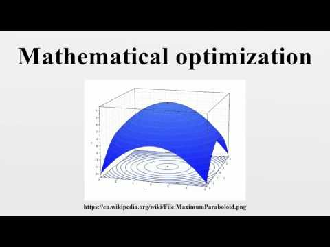

Mathematical Optimization
Introduction:
Mathematical optimization (alternatively spelled optimisation) or mathematical programming is the selection of a best element, with regard to some criterion, from some set of available alternatives.
Optimization problems can be divided into two categories, depending on whether the variables are continuous or discrete:
- An optimization problem with discrete variables is known as a discrete optimization, in which an object such as an integer, permutation or graph must be found from a countable set.
- A problem with continuous variables is known as a continuous optimization, in which optimal arguments from a continuous set must be found. They can include constrained problems and multimodal problems.
Such a formulation is called an optimization problem or a mathematical programming problem (a term not directly related to computer programming, but still in use for example in linear programming – see History below). Many real-world and theoretical problems may be modeled in this general framework.